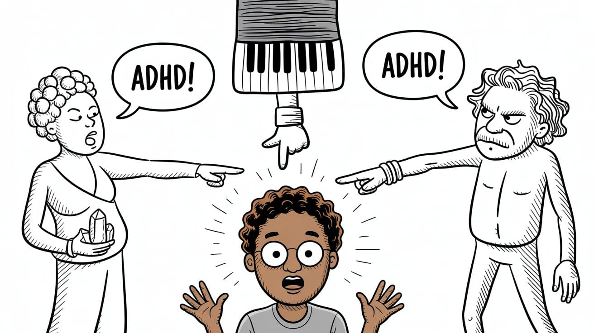
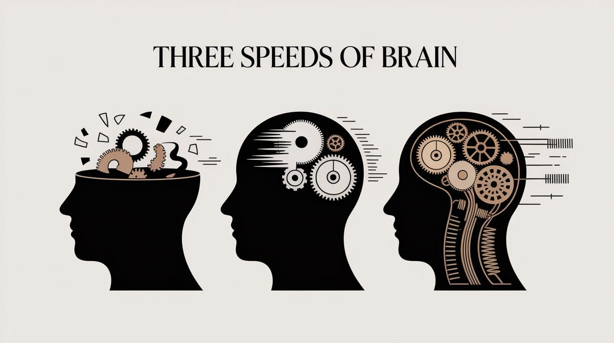
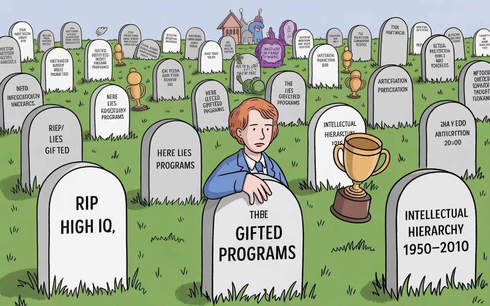
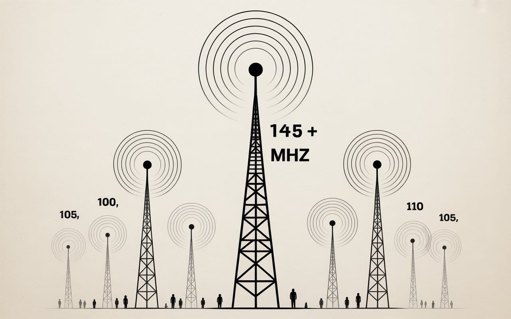
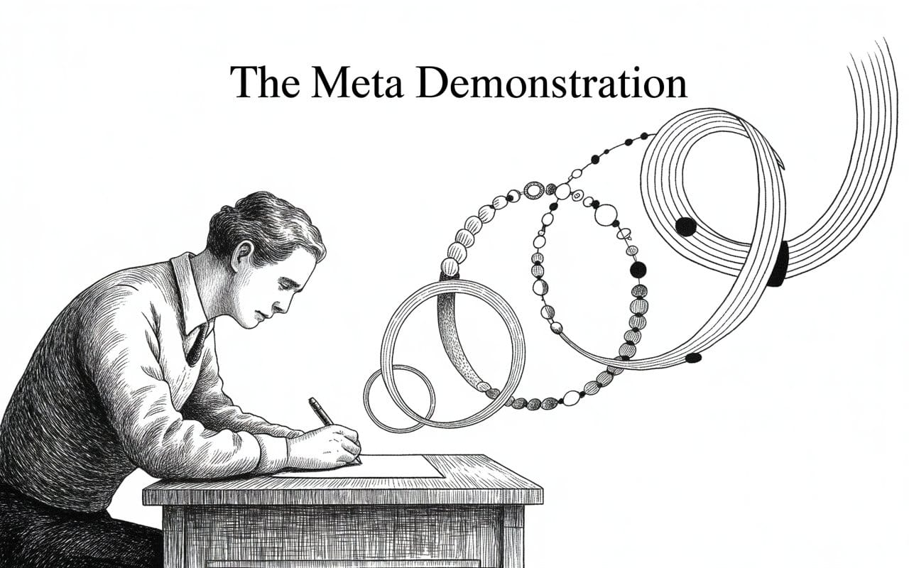
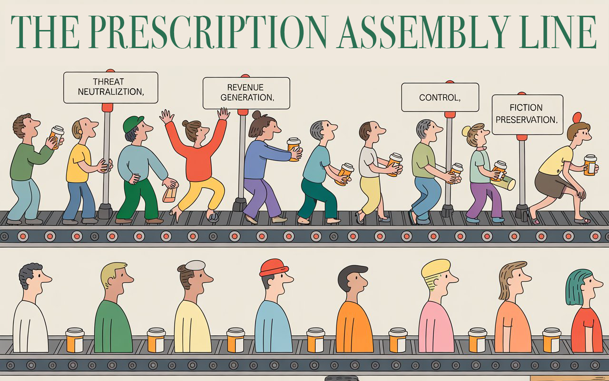

The Speed Trap
They labeled it ADHD. But what if your rapid-fire mind isn't broken—just faster? Here's how the medical system mistakes cognitive speed for disorder, and the unsettling reason they need you to believe you're broken.


"It is no measure of health to be well adjusted to a profoundly sick society.”
— Jiddu Krishnamurti, who spent his entire life telling people to reject all authorities and systems, and would probably be deeply disturbed to discover he's being quoted as an authority to critique a system


How Society Medicates Excellence Into Submission
A yoga teacher, my brother, and my best friend all diagnosed me with ADHD. None of them were right. Here's what actually happened...
The yoga teacher cornered me at a party.
"I think you have ADHD," she said, touching my arm with that particular brand of spiritual authority that comes from three weeks of Reiki training. "I'm neurodivergent. I can sense these things."
I bet you can.
My best friend was next. A world-class pianist who had played her way into finger paralysis - brilliant, actually autistic and ADHD, she could almost keep pace with how fast I think. Almost. "You remind me of me," she said. And through her lens—watching herself navigate the world—I could see why she'd think that. If you squinted. If you ignored literally everything about how our brains actually work. Like mistaking a jazz improviser for someone with music-induced anxiety, she saw her own patterns in my flow.
Then my brother self-diagnosed with ADHD and decided I had it too. Used it as a get-out-of-jail-free card for every bad decision, every missed deadline, every time he couldn't regulate his emotions. When he tried to diagnose me with the same emotional dysregulation, I did what any rational, calm, non-ADHD person with a stratospheric IQ would do.
I systematically triggered the exact emotional response he accused me of having.
Watched him spiral. Watched him prove my point.
Game. Set. Match.

None of them were right.
But here's the thing—this isn't just my story. It's the story of thousands receiving the same lazy diagnosis daily. TikTok has transformed armchair psychology into the new astrology, while a more uncomfortable truth remains unacknowledged: some brains simply outpace the systems we've built to contain them.
Let me show you how the con works.
The Three Types of Fast, Sometimes Furious
To the untrained eye—or the deliberately indifferent one—three completely different types of brains look basically the same. And there's serious money in that confusion.

- Speed 1: Actual ADHD - Your brain genuinely can't focus, even when you want to, because you’re too busy asking if anyone has seen your keys
- Speed 2: High IQ - Your brain processes so fast that normal pace feels like torture, beautiful torture at times
- Speed 3: Off the Charts - Your brain runs at Speed 2 but learned to translate for people still loading—think Josh Nash, but with social skills
Guess which one gets medicated most often?
All of them. Because nobody's checking.
Speed 1: The Great American ADHD Rush
Here's a fun fact that’ll mess with your head and everything you thought you knew:
9.4 percent of American kids have ADHD.
3.5 percent of French kids have ADHD.
Less than 1 percent of Japanese kids have ADHD.
So either there's something in our water that's causing a neurological epidemic ten times worse than Japan's, or... well, you can probably see where this is going.
ADHD medication revenue in 2020: $17.9 billion
I’ll let you connect the dots…
Real ADHD exists. Kids who genuinely can't regulate attention even when they're interested in something. Adults whose executive function breaks down regardless of motivation.
But most of what gets diagnosed as ADHD in North America is actually:
Six-year-olds being six. We expect them to sit still for eight hours and call it a disorder when they can't.
Teenagers rejecting boring curriculum. We bore them into submission then medicate the resistance.
Adults who refuse mind-numbing work. We've convinced them that hating repetitive tasks is a chemical imbalance.
Here's the tell: If you can hyperfocus on complex problems for hours but can't sit through a pointless meeting, that's not ADHD. That's your brain demanding stimulation worth its processing power.
ADHD is a floor problem. You can't focus even when you want to. High IQ is a ceiling problem. You can't stay focused when the ceiling's too low.
The difference matters. But there's no profit in the difference.
Speed 2: When "Gifted" Became a Dirty Word
"High IQ" used to mean something specific. Top 2-5% of cognitive ability. Real advantages in seeing patterns, thinking abstractly, holding complex ideas in your head.
Then the internet killed it.

Suddenly every online IQ test was handing out 130+ scores for clicks. "Multiple intelligences" became code for "everyone's smart at something!" People started pushing "emotional intelligence" as the real deal—usually people who didn't have much of either kind. And don't get me started on the "every child is gifted" movement.
The whole thing got so watered down that researchers basically gave up and started using boring phrases like "cognitively advanced" instead.
But here's what Speed 2 actually looks like in practice:
The Two Flavors of Fast
Flavor 1: High IQ + Neurotypical
You see patterns instantly. Think in systems. Get bored when others are still processing the setup. Can navigate social situations but find them exhausting because everyone moves so. fucking. slow.
You get misdiagnosed with ADHD when you question inefficient systems, need alone time to process, or can't pretend to pay attention during meetings where the solution was obvious fifteen minutes ago.
Flavor 2: High IQ + Autistic
Same pattern recognition speed. Same system thinking. But you're also running a different operating system for social processing.
Where neurotypical high IQ people intuitively read social cues, you're reverse-engineering them. Where they get drained by social interaction, you're getting drained by social interaction and sensory overload and having to consciously decode what others process automatically.
Your special interests + high IQ = domain mastery that looks like obsession to people who've never been that focused on anything.
You get hit with the double misdiagnosis:
Autistic traits → "ADHD":
- Sensory overwhelm → "Easily distracted"
- Special interest hyperfocus → "Can't multitask"
- Need for routine → "Rigid thinking"
- Direct communication → "Impulsive"
High IQ traits → "ADHD":
- Pattern recognition speed → "Mind wandering"
- Boredom with repetition → "Can't focus"
- Processing ahead → "Interrupting"
Result: Two different neurological architectures, same lazy diagnosis, same useless medication.
What Speed 2 Actually Needs
Not drugs to slow you down.
Complex problems worth solving. Your brain is starving, not broken.
Permission to move at your actual pace. Stop pretending the ceiling isn't too low.
If you're autistic: Clear communication, sensory-friendly environments, recognition that different ≠ deficient.
What you definitely don't need: Medication for an attention deficit you don't have.
Speed 3: The Loneliest Frequency
IQ 145+. High emotional intelligence. Both at once.
0.02% of the population. One in five thousand.

This isn't just "very smart." This is running three standard deviations faster than everyone around you while having learned to translate in real time so they don't notice the gap.
Most high IQ people never develop this. They get isolated young, retreat into books, never learn the social game. Their cognitive speed makes regular interaction torture, so they opt out.
But some figure it out. They study humans like systems. Reverse-engineer social dynamics. Learn to make others feel brilliant while running invisible strategies twelve moves ahead.
They operate on multiple levels simultaneously: the conversation you're having, and the conversation about the conversation, and the pattern analysis of how this conversation fits into broader dynamics you're not even tracking.
And it's fucking exhausting.
You can never relax fully, never be yourself completely, never stop translating between your processing speed and others' capacity to receive, never stop managing the chasm between what you see and what others can handle.
The loneliest part? You can't explain this without sounding arrogant. So you don't. You just carry it.
Why Speed 3 Gets Hit Hardest
Speed 3 gets targeted for ADHD diagnosis constantly because:
- You can't sit through meetings where you solved the problem in the first five minutes
- You interrupt because you processed their point three sentences ago
- You seem scattered because you're running fifteen analyses in parallel
- You need intense stimulation because standard tasks feel like starving your brain
But it's not deficit. It's excess capacity creating friction.
When the system can't handle you, it's easier to call you broken.
The Trap You Just Walked Into
Notice what I just did?
Built a three-tier framework. Maintained narrative coherence across complex nested arguments. Integrated statistics, psychology, personal narrative. Constructed a meta-analysis while demonstrating the thesis in real time.

Which speed brain wrote this?
- Speed 1 (ADHD) would: Fragment mid-thought. Lose the thread. Chase tangents. Never close the loop.
- Speed 2 (High IQ) would: Build solid logic. Present clear evidence. But miss that the structure itself is proof.
- Speed 3 wrote this. The framework tests you while explaining itself. The argument proves the thesis through demonstration. The writing performs the cognitive level it describes.
If I had ADHD, I couldn't have written this. I wrote this. Therefore: Not ADHD.
QED, MFER’s.
The Real Reason They Want You on Pills
This isn't just sloppy diagnosis. The mistakes are too consistent, too profitable to be accidents.

Reason 1: You're Threatening
Fast processors make everyone else feel slow. Pattern-spotters make everyone's blind spots obvious. System-questioners make the people who built those systems uncomfortable.
A medical diagnosis flips the script perfectly: "They're not smarter—they're sick." Suddenly you go from threatening to pitiful.
It has always been easier to pathologize excellence than to reckon with the hierarchies of capability we pretend don't exist.
Reason 2: You're Profitable
Diagnosis creates patients. Patients create revenue. Revenue creates incentive for more diagnosis.
It's a perfect cycle. Why would anyone in this system want accuracy when expansion pays so much better?
Reason 3: You're Ungovernable Without Chemicals
High IQ people question inefficient systems. See through bullshit instantly. Refuse rules that don't make logical sense.
Pills do what persuasion can't—they make you manageable.
Slow down the brain, speed up the compliance.
Reason 4: You Expose the Lie
We're all supposed to be basically equal, right? But fast brains shatter that comfortable myth.
Calling you disordered preserves the comfortable fiction that we're all basically the same.
One diagnosis, four functions:
- Threat neutralization
- Revenue generation
- Behavioral control
- Fiction preservation
It's not healthcare. It's social control with a prescription pad.
The Questions Nobody's Asking
Why is cognitive speed pathologized but athletic speed celebrated?
Run a four-minute mile? Full ride to college. Think at light speed? Here's some Adderall.
Why is pattern recognition treated as disorder?
Perfect pitch gets you into Juilliard. Perfect pattern recognition gets you a psychiatrist.
Why does questioning inefficiency need medication?
Engineer spots a better way to do something? Innovation bonus. Kid spots that school rules make no sense? "Oppositional defiant disorder."
Why do we medicate boredom with mediocrity?
LeBron James doesn't play pickup games at the Y—that's normal. But when your brain refuses mental junk food? "Attention deficit."
The real question isn't whether I have ADHD.
The real question is why a society that claims to value intelligence has to drug it into submission to feel comfortable.
The Loop (Or: What Happens When You Actually See the Whole Game)
Sometimes the freeze isn't ADHD or fear.
Sometimes it's what happens when you can see every single move on the board.
Every consequence. Every implication. Every way your decision ripples outward through systems nobody else is tracking.
And the magnitude locks your nervous system.
People watching think it's:
- "Analysis paralysis"
- "Fear of failure"
- "ADHD executive dysfunction"
What's actually happening:
You're not stuck—you're in metamorphosis.
"Now I do not know whether I was then a man dreaming I was a butterfly, or whether I am now a butterfly, dreaming I am a man.”
Zhuangzi asked this twenty-five centuries ago, but he was asking your question: What's real? The identity others impose, or the one you know from the inside?
You've been told you're the caterpillar—broken, disordered, needing fixing. But what if you're actually the butterfly, and they've just never seen one before?
What you're carrying is big enough that releasing it means becoming someone completely different. Someone who can handle what you're about to unleash.
And transformation—even necessary transformation—feels like death.
Because it is. Death of the private visionary. Birth of the public builder.
Visionaries get high on endless possibilities. Building stuff means picking just one.
That gap? That's the loop.
If you're reading this stuck in that exact spot, feeling called out—you're not broken. You're at threshold.
That pause isn't a bug. It's your system loading the next level.
The Test
Did you read this whole thing?
Congrats. Your executive function is fine.
Did the structure track?
You're at least Speed 2. Your pattern recognition works.
Did you see where this was going before I got there?
Welcome to the club nobody talks about. Population: awkwardly small.
Did you recognize yourself in the High IQ + Autism section?
They've been calling both your processing speed AND your autism "ADHD." Neither diagnosis was right.
Did you catch the meta-trap?
You're Speed 3. You've been doing this your whole life—you just never had words for it.
Are you frozen before something enormous right now?
You're not broken. You're at the edge of something big. Everything before this was just prep work.
What I'm Not
I'm not ADHD.
I'm pattern recognition running faster than your little diagnostic boxes can contain.
I'm the kind of brain your tests were never built to handle.
I'm a mind that sees right through your systems—and I'm done pretending I don't.
Your discomfort is not my disorder.
Your inability to track my processing is not my deficit.
Your need for me to slow down is not my medical problem.
It's your limitation.
And I'm done pretending it's mine.
What You Should Be Asking
Not: "What's wrong with people like this?"
But: "What's wrong with systems that can't accommodate people like this?"
You won't ask it.
Because the answer means admitting:
- That equality is mythology
- That control is the goal
- That profit drives diagnosis
- That accommodation costs more than medication
It means admitting we drug excellence because average needs company.
So you'll keep calling it ADHD. Keep writing prescriptions. Keep drugging the questions. Keep slowing the processing.
Anything except asking the one question that matters:
What if they're not broken?
What if they're just faster than your frameworks can measure?
What if the problem is your system, not their brain?
For Everyone Reading This Who Knows
You've been told you're broken your whole life.
Medicated. Diagnosed. Pathologized. Made to feel fundamentally wrong.
You've spent years trying to fix yourself to fit into systems that were never built for brains like yours.
You're not broken.
You're not disordered.
You're not deficient.
You're running at frequencies their equipment can't even measure.
You're built with architecture their systems refuse to handle.
Just because they can't measure it doesn't make it less real.
It makes their instruments shit.
The Choice
Look, this isn't about rejecting every diagnosis or throwing away all treatment. It's about getting smarter:
- Figure out your actual cognitive setup—not as broken, just as different.
- Choose what actually helps you versus what just makes everyone else comfortable.
- Build systems that work with your brain instead of fighting it constantly.
- Find people and places where you don't have to translate yourself down to half-speed.
- Learn to spot when "symptoms" are actually signals—your brain rebelling against cognitive starvation.
Some people genuinely need medical support. But the goal is learning to tell the difference between tools that actually help your brain evolve and tools that just help you disappear into systems that were never designed for minds like yours.
You have one life. Time stands still. Compute is finite.
Choose accordingly.
Don't miss the weekly roundup of articles and videos from the week in the form of these Pearls of Wisdom. Click to listen in and learn about tomorrow, today.


Sign up now to read the post and get access to the full library of posts for subscribers only.
 🌶️ iamkhayyam
🌶️ iamkhayyamAbout the Author
Khayyam Wakil spent his teenage years getting called "gifted" and "difficult" in the same breath—building neural networks in high school while teachers suggested he "might have focus issues." Growing up in Saskatchewan taught him that systems either work in extreme conditions or they break, and most people mistake intensity for instability.
Twenty years later, he designs infrastructure for brains and machines that process faster than the frameworks built to contain them. His breakthrough in distributed edge intelligence emerged from a simple recognition: different processors need different architectures, whether you're talking about data centers or human minds.
Khayyam writes about the collision between rapid cognition and slow institutions—from the perspective of someone who's been misdiagnosed by yoga teachers, watched promising minds get medicated into compliance, and learned that the most dangerous innovations happen when fast processors refuse to slow down for systems that can't keep up.
He doesn't fix broken people. He builds systems worthy of unbroken minds.
Contact: sendtoknowware@protonmail.com
"Token Wisdom" - Weekly deep dives into the future of intelligence: https://ghost-production-198e.up.railway.app
#speedtrap #cognitivefriction #pathologizingexcellence #ADHD #misdiagnosis #highIQproblems #patternrecognition #neurodivergent #notdisordered #medicalizedmediocrity #control #diagnostictrap #longread | 🧠⚡ | #tokenwisdom #thelessyouknow 🌈✨